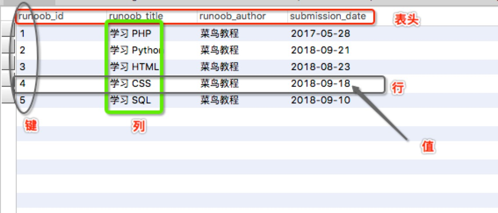

MySQL チュートリアル
MySQL は最も人気のあるリレーショナルデータベース管理システムであり、WEB アプリケーションの分野では、MySQL は最高の RDBMS（Relational Database Management System：リレーショナルデータベース管理システム）アプリケーションソフトウェアの 1 つです。
本チュートリアルでは、MySQL の基本知識を素早く習得し、MySQL データベースを簡単に使用できるようにします。
オンラインテストツール：https://www.jyshare.com/front-end/7768/。
データベースとは？
データベース（Database）とは、データ構造に基づいてデータを組織化、保存、管理する倉庫です。
各データベースには、保存されたデータを作成、アクセス、管理、検索、複製するための 1 つ以上の異なる API があります。
データをファイルに保存することもできますが、ファイルへのデータの読み書きは比較的遅いです。
そのため、現在ではリレーショナルデータベース管理システム（RDBMS）を使用して、大量のデータを保存・管理しています。いわゆるリレーショナルデータベースとは、関係モデルに基づいて構築されたデータベースであり、集合代数などの数学的概念や方法を利用してデータベース内のデータを処理します。
RDBMS、すなわちリレーショナルデータベース管理システム（Relational Database Management System）の特徴：
- 1. データはテーブル形式で表示される
- 2. 各行は各種レコード名である
- 3. 各列はレコード名に対応するデータフィールドである
- 4. 多くの行と列が 1 つのフォームを構成する
- 5. いくつかのフォームが database を構成する
RDBMS 用語
MySQL データベースの学習を始める前に、RDBMS のいくつかの用語を理解しましょう。
- データベース：データベースは、関連するテーブルの集合です。
- データテーブル：テーブルはデータの行列です。データベース内のテーブルは、シンプルなスプレッドシートのように見えます。
- 列：列（データ要素）には、郵便番号データなど、同じタイプのデータが含まれます。
- 行：行（タプル、またはレコード）は関連するデータの集まりであり、例えばユーザー購読の 1 件のデータです。
- 冗長性：2 倍のデータを保存します。冗長性はパフォーマンスを低下させますが、データの安全性を高めます。
- 主キー：主キーは一意です。1 つのデータテーブルには 1 つの主キーのみを含めることができます。主キーを使用してデータを照会できます。
- 外部キー：外部キーは 2 つのテーブルを関連付けるために使用されます。
- 複合キー：複合キー（組み合わせキー）は複数の列を 1 つのインデックスキーとして扱い、一般に複合インデックスに使用されます。
- インデックス：インデックスを使用すると、データベーステーブル内の特定の情報にすばやくアクセスできます。インデックスは、データベーステーブルの 1 つまたは複数の列の値を並べ替える構造です。書籍の目次に似ています。
- 参照整合性：参照整合性は、関係において存在しないエンティティを参照することを許可しないことを要求します。エンティティ整合性とともに、関係モデルが満たさなければならない整合性制約条件であり、データの一貫性を保証することを目的としています。
MySQL はリレーショナルデータベース管理システム（Relational Database Management System）です。このいわゆる「リレーショナル」は「テーブル」の概念として理解できます。1 つのリレーショナルデータベースは 1 つまたは複数のテーブルで構成されます。図に示すようなテーブルです：

- ヘッダー（header）：各列の名前。
- 列（col）：同じデータ型を持つデータの集合。
- 行（row）：各行は特定のレコードの具体的な情報を記述するために使用されます。
- 値（value）：行の具体的な情報であり、各値はその列のデータ型と同じでなければなりません。
- キー（key）：キーの値は現在の列内で一意性を持ちます。
MySQL データベース
MySQL はリレーショナルデータベース管理システムであり、スウェーデンの MySQL AB 社によって開発され、現在は Oracle 社に属しています。MySQL はリレーショナルデータベース管理システムの一種であり、リレーショナルデータベースはすべてのデータを 1 つの大きな倉庫に置くのではなく、異なるテーブルにデータを保存します。これにより速度が向上し、柔軟性が高まります。
- MySQL はオープンソースであり、現在は Oracle 傘下の製品です。
- MySQL は大規模なデータベースをサポートしています。数千万件のレコードを持つ大規模なデータベースを処理できます。
- MySQL は標準の SQL データ言語形式を使用します。
- MySQL は複数のシステム上で動作し、多くの言語をサポートしています。これらのプログラミング言語には、C、C++、Python、Java、Perl、PHP、Eiffel、Ruby、Tcl などが含まれます。
- MySQL は PHP をよくサポートしており、PHP は Web アプリケーション開発に非常に適しています。
- MySQL は大規模なデータベースをサポートし、5000 万件のレコードを持つデータウェアハウスをサポートします。32 ビットシステムではテーブルファイルは最大 4GB、64 ビットシステムでは最大のテーブルファイルは 8TB です。
- MySQL はカスタマイズ可能であり、GPL ライセンスを採用しています。ソースコードを変更して独自の MySQL システムを開発できます。
本チュートリアルを学習する前に知っておくべきことは？
本チュートリアルを学習する前に、PHP と HTML の基礎知識を理解し、簡単に応用できる必要があります。
本チュートリアルの多くの例は PHP 言語に関連しており、サンプルは基本的に PHP 言語を使用して説明しています。
PHP をまだ理解していない場合は、当サイトのPHP チュートリアルでその言語を学ぶことができます。
その他の拡張
7ページ目に書く。
246***3613@qq.com
列：同じデータ型を持つデータの集合
行：各行は特定のレコードの具体的な情報を記述するために使用される
冗長性：2 倍のデータを保存する。冗長性はパフォーマンスを低下させるが、データの安全性を高める
主キー：主キーは一意であり、1 つのデータテーブルは 1 つの主キーのみを持つことができる。主キーを使用して情報を照会できる
複合キー：複合キー（組み合わせキー）は複数の列を 1 つのインデックスキーとしてまとめるもので、一般に複合インデックスに使用される
インデックス：インデックスを使用すると、データテーブル内の特定の情報にすばやくアクセスできる。インデックスは、データベース内の 1 つまたは複数の列の値を並べ替えた構造である。書籍の目次に相当する。
参照整合性：参照整合性は、関係において存在しないエンティティを導入することを許可しないことを要求する。
値：行の具体的な情報であり、各値はその列のデータ型と同じでなければならない
キー：キーの値は現在の列内で一意性を持つ
7ページ目に書く。
246***3613@qq.com